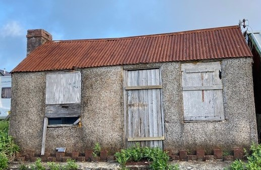

Chip shop
Mrs Jones, Gorslwyd, the blacksmiths’ wife, started the chip shop. Then Mary Griffths ran it and Mrs T.O. Williams in later years. In the 1950s, the children from the village used to get two shillings or half a crown to prepare the potatoes. Afterwards, Mary used to play Brag-pontoon with the children and win all the money back. The potatoes were supplied by Blodwen, Blaenau and she used to bring them up to the chip shop with a governess cart.
The Chip Shop was opened by Mrs Jones, Gorslwyd, the blacksmith’s wife, before Mary Griffith, Fron took over and in later years Mrs T.O. Williams, Katie, took over. Dewi Williams, Brynmor, remembers going, as a child to prepare the potatoes. They did this in the Bakery and got 2/6 or two shillings for their troubles. Afterwards, Mary used to get the cards out to play Brag-pontoon with them. She won everything she had paid them back.
Dewi recalls:
When Mrs T.O. Wiliams was in charge, Lizzie Jane, Caermynydd used to be in the shop every night when it was open, up until closing time, because of the warmth. She took her hot water bottle with her to fill, so she could go home and straight to bed.
The Chip Shop in 2021